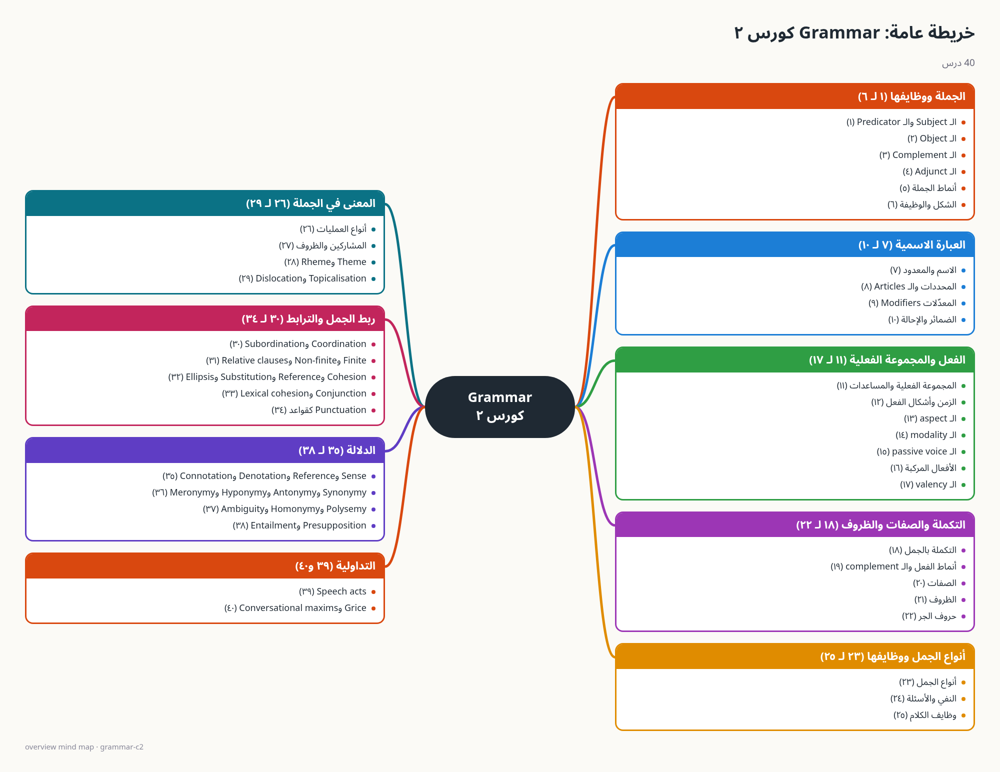

🧩
كورس القواعد 2 (Grammar 2)
الكورس التاني: تحليل الجملة البسيطة بالوظايف، من الأساس. كل درس بصوته وPDF وأسئلة.
🧠 شوف الخريطة الذهنية الشاملة للكورس

📚 ملفات PDF إضافية للكورس
📄 القواعد المتقدمة، الكورس كامل (1 إلى 46): إنجليزي مبسط📄 القواعد المتقدمة، الكورس كامل (1 إلى 46): إنجليزي + مصري📄 القواعد المتقدمة، الكورس كامل (1 إلى 46): ملخصات الدروس📄 القواعد المتقدمة، الدروس 1 إلى 4: إنجليزي مبسط📄 القواعد المتقدمة، الدروس 1 إلى 4: إنجليزي + مصري📄 القواعد المتقدمة، الدروس 1 إلى 4: ملخصات الدروس📄 القواعد المتقدمة، الدروس 5 و6: إنجليزي مبسط📄 القواعد المتقدمة، الدروس 5 و6: إنجليزي + مصري📄 القواعد المتقدمة، الدروس 5 و6: ملخصات الدروس📄 القواعد المتقدمة، الدروس 7 إلى 9: إنجليزي مبسط📄 القواعد المتقدمة، الدروس 7 إلى 9: إنجليزي + مصري📄 القواعد المتقدمة، الدروس 7 إلى 9: ملخصات الدروس📄 القواعد المتقدمة، الدروس 10 إلى 12: إنجليزي مبسط📄 القواعد المتقدمة، الدروس 10 إلى 12: إنجليزي + مصري📄 القواعد المتقدمة، الدروس 10 إلى 12: ملخصات الدروس📄 القواعد المتقدمة، الدروس 13 إلى 15: إنجليزي مبسط📄 القواعد المتقدمة، الدروس 13 إلى 15: إنجليزي + مصري📄 القواعد المتقدمة، الدروس 13 إلى 15: ملخصات الدروس📄 القواعد المتقدمة، الدروس 16 إلى 18: إنجليزي مبسط📄 القواعد المتقدمة، الدروس 16 إلى 18: إنجليزي + مصري📄 القواعد المتقدمة، الدروس 16 إلى 18: ملخصات الدروس📄 القواعد المتقدمة، الدروس 19 إلى 21: إنجليزي مبسط📄 القواعد المتقدمة، الدروس 19 إلى 21: إنجليزي + مصري📄 القواعد المتقدمة، الدروس 19 إلى 21: ملخصات الدروس📄 القواعد المتقدمة، الدروس 22 إلى 24: إنجليزي مبسط📄 القواعد المتقدمة، الدروس 22 إلى 24: إنجليزي + مصري📄 القواعد المتقدمة، الدروس 22 إلى 24: ملخصات الدروس📄 القواعد المتقدمة، الدروس 25 و26: إنجليزي مبسط📄 القواعد المتقدمة، الدروس 25 و26: إنجليزي + مصري📄 القواعد المتقدمة، الدروس 25 و26: ملخصات الدروس📄 القواعد المتقدمة، الدروس 27 إلى 29: إنجليزي مبسط📄 القواعد المتقدمة، الدروس 27 إلى 29: إنجليزي + مصري📄 القواعد المتقدمة، الدروس 27 إلى 29: ملخصات الدروس📄 القواعد المتقدمة، الدروس 30 إلى 32: إنجليزي مبسط📄 القواعد المتقدمة، الدروس 30 إلى 32: إنجليزي + مصري📄 القواعد المتقدمة، الدروس 30 إلى 32: ملخصات الدروس📄 القواعد المتقدمة، الدروس 33 إلى 35: إنجليزي مبسط📄 القواعد المتقدمة، الدروس 33 إلى 35: إنجليزي + مصري📄 القواعد المتقدمة، الدروس 33 إلى 35: ملخصات الدروس📄 القواعد المتقدمة، الدروس 36 إلى 38: إنجليزي مبسط📄 القواعد المتقدمة، الدروس 36 إلى 38: إنجليزي + مصري📄 القواعد المتقدمة، الدروس 36 إلى 38: ملخصات الدروس📄 القواعد المتقدمة، الدروس 39 إلى 41: إنجليزي مبسط📄 القواعد المتقدمة، الدروس 39 إلى 41: إنجليزي + مصري📄 القواعد المتقدمة، الدروس 39 إلى 41: ملخصات الدروس📄 القواعد المتقدمة، الدروس 42 إلى 44: إنجليزي مبسط📄 القواعد المتقدمة، الدروس 42 إلى 44: إنجليزي + مصري📄 القواعد المتقدمة، الدروس 42 إلى 44: ملخصات الدروس📄 القواعد المتقدمة، الدروس 45 و46: إنجليزي مبسط📄 القواعد المتقدمة، الدروس 45 و46: إنجليزي + مصري📄 القواعد المتقدمة، الدروس 45 و46: ملخصات الدروستقدمك ·
<
🧭
كورس 2، الجملة البسيطة 1: Subject وPredicator📊 من الصفر
🎯
كورس 2، الجملة البسيطة 2: Objects📊 من الصفر
🏷️
كورس 2، الجملة البسيطة 3: Complements📊 من الصفر
➕
كورس 2، الجملة البسيطة 4: Adjuncts📊 من الصفر
🧩
كورس 2، الجملة البسيطة 5: أنماط الـ clause📊 من الصفر
🔁
كورس 2، الجملة البسيطة 6: الشكل والـ realisation📊 من الصفر
📦
كورس 2، المجموعة الاسمية 1: الاسم والمعدود📊 من الصفر
👆
كورس 2، المجموعة الاسمية 2: المحددات والـ articles📊 من الصفر
🔗
كورس 2، المجموعة الاسمية 4: الضمائر والإحالة📊 من الصفر
🎨
كورس 2، المجموعة الاسمية 3: المعدّلات قبل الاسم وبعده📊 من الصفر
⚙️
كورس 2، المجموعة الفعلية 1: المجموعة الفعلية والمساعدات📊 من الصفر
⏰
كورس 2، المجموعة الفعلية 2: الزمن وأشكال الفعل📊 من الصفر
⏰
كورس 2، المجموعة الفعلية 3: الـ aspect📊 من الصفر
🧭
كورس 2، المجموعة الفعلية 4: الـ modality📊 من الصفر
🔁
كورس 2، المجموعة الفعلية 5: الـ passive voice📊 من الصفر
🧩
كورس 2، المجموعة الفعلية 6: الأفعال المركبة📊 من الصفر
🔗
كورس 2، تكملة الفعل 1: الـ valency📊 من الصفر
🧱
كورس 2، تكملة الفعل 2: التكملة بالجمل📊 من الصفر
🪢
كورس 2، تكملة الفعل 3: أنماط الفعل والـ complement📊 من الصفر
🎨
كورس 2، الصفات والظروف 1: الصفات📊 من الصفر
🏃
كورس 2، الصفات والظروف 2: الظروف📊 من الصفر
🧭
كورس 2، الصفات والظروف 3: حروف الجر📊 من الصفر
❓
كورس 2، أنواع الجمل 1: أنواع الجمل📊 من الصفر
🚫
كورس 2، أنواع الجمل 2: النفي والأسئلة📊 من الصفر
💬
كورس 2، أنواع الجمل 3: وظايف الكلام📊 من الصفر
🎬
كورس 2، المعنى التمثيلي 1: أنواع العمليات📊 من الصفر
🎭
كورس 2، المعنى التمثيلي 2: المشاركين والظروف📊 من الصفر
🧭
كورس 2، بناء الرسالة 1: Theme وRheme📊 من الصفر
🎯
كورس 2، بناء الرسالة 2: Topicalisation وDislocation وEnd-focus📊 من الصفر
🔗
كورس 2، ربط الجمل 1: Coordination وSubordination📊 من الصفر
🧩
كورس 2، ربط الجمل 2: Finite وNon-finite وRelative clauses📊 من الصفر
🔗
كورس 2، الترابط النصي 1: Cohesion وReference وSubstitution وEllipsis📊 من الصفر
🔗
كورس 2، الترابط النصي 2: Conjunction وLexical cohesion📊 من الصفر
✏️
كورس 2، الترابط النصي 3: Punctuation كقواعد📊 من الصفر
💡
كورس 2، الدلالة 1: Sense وReference وDenotation وConnotation📊 من الصفر
🕸️
كورس 2، الدلالة 2: Synonymy وAntonymy وHyponymy وMeronymy📊 من الصفر
🔀
كورس 2، الدلالة 3: Polysemy وHomonymy وAmbiguity📊 من الصفر
🧠
كورس 2، الدلالة 4: Presupposition وEntailment📊 من الصفر
🗣️
كورس 2، التداولية 1: Speech acts📊 من الصفر
💬
كورس 2، التداولية 2: Grice وConversational maxims📊 من الصفر
🙏
كورس 2، التداولية 3: Politeness والـ Face📊 من الصفر
👉
كورس 2، التداولية 4: Deixis والإشاريات📊 من الصفر
⚖️
كورس 2، التداولية 5: Hedging والـ Stance📊 من الصفر
🔊
كورس 2، الصوتيات 1: Phoneme والـ Allophone📊 من الصفر
🥁
كورس 2، الصوتيات 2: Syllable والـ Stress📊 من الصفر
🎵
كورس 2، الصوتيات 3: Intonation📊 من الصفر